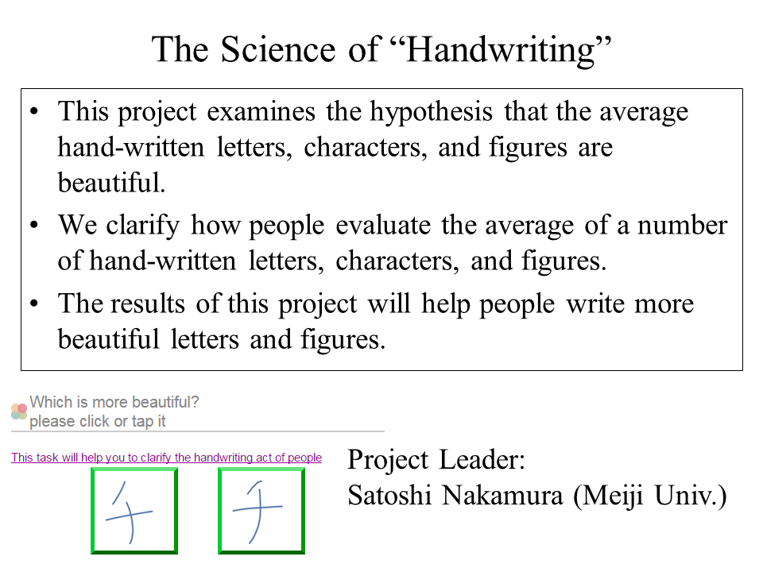
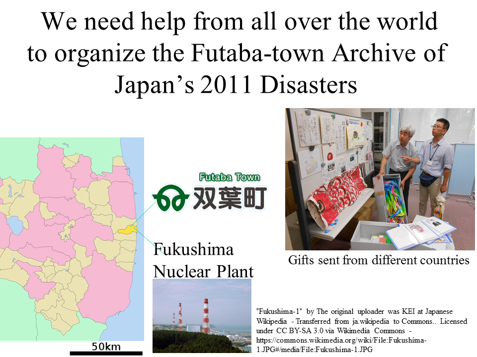
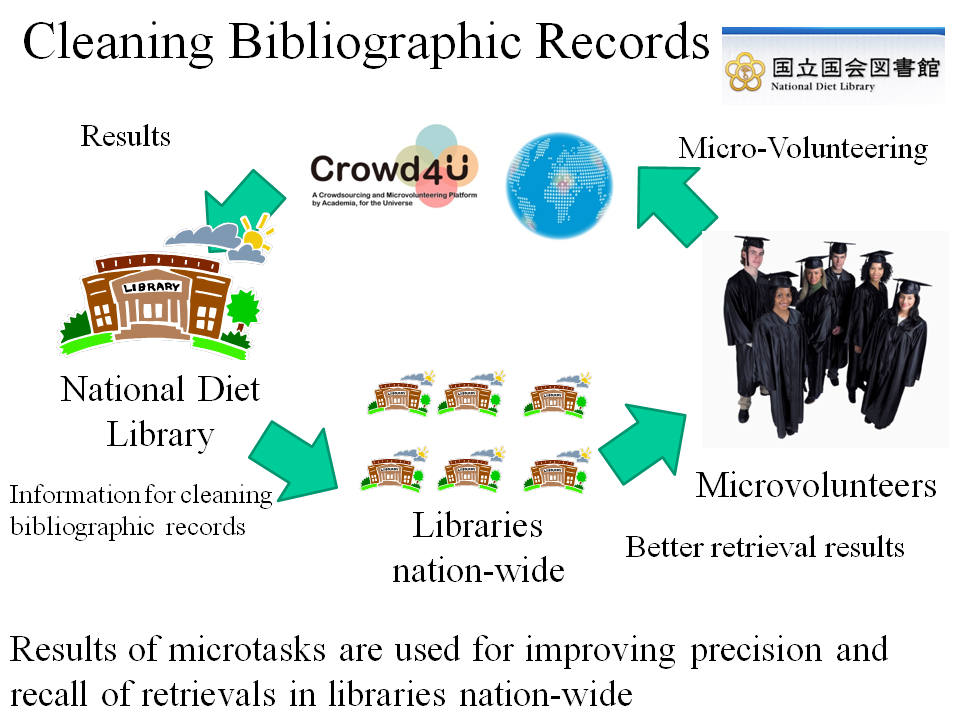
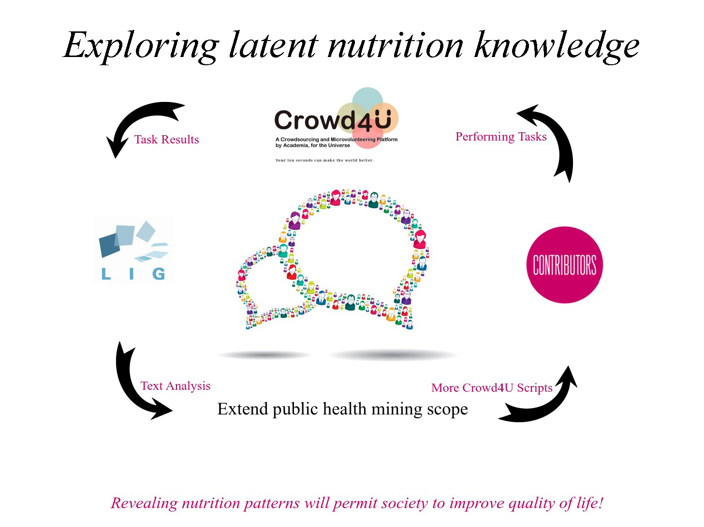
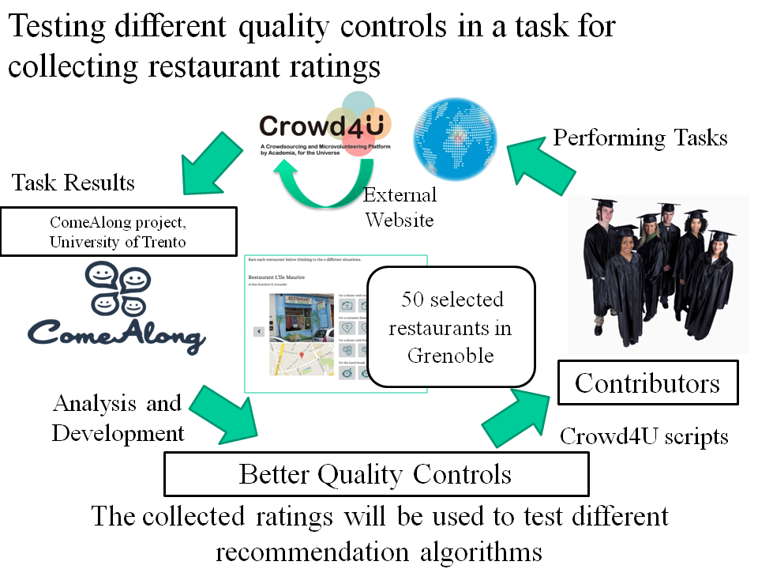
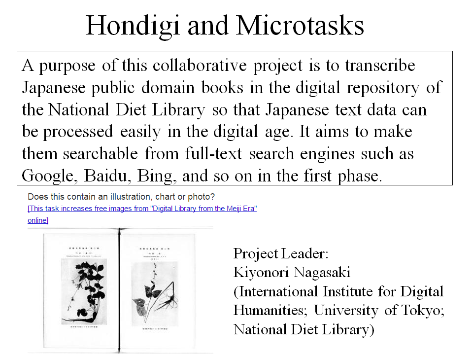
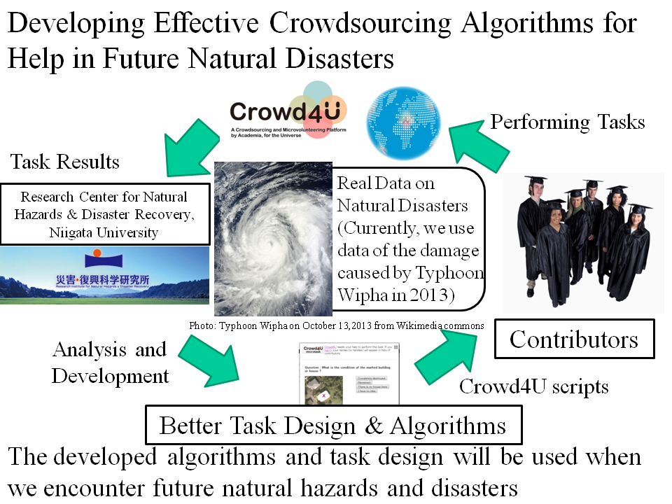

Crowdsourcing Projects for Academic and Public Purposes on Crowd4U
Crowd4U is a nonprofit open platform for crowdsourcing projects for public and academic purposes.
The following are a part of the ongoing projects each of which makes the world better in some way.
Be a team member of the wonderful projects by performing their tasks!
Next Crowd4U
This is a new platform for solving a variety of problems in the world.
This has been being developed by a new-generation team, based on our experience of operating the former Crowd4U (Oahu) since 2011 the ongoing projects on the former Crowd4U (Oahu) will be ported to the new platform.
You can join them by clicking on the links below.
Ongoing Projects: Task List
* You can perform tasks by clicking on the "Perform Tasks" buttons, or alternatively, the buttons placed at the end of the description of each project.

Completed Projects : List
The LODEM Project - LOD for Enhancing Manga contents / Exploring latent nutrition knowledge / ComeAlong Project / An L-Crowd Project: Finding Different Books that have the Same ISBN / An L-Crowd Project: "TranscribeJP @Japanese Association for Digital Humanities" and "Microtasks" / MIND: Micro-volunteering for Help in Natural Disasters /
Ongoing Projects: Task List
Tsunami Evacuation Shelter Selection Support Project
Securing evacuation shelters is essential to mitigate tsunami damage, but developing new facilities requires significant financial and human resources, leading to a serious shortage of shelters in many municipalities. While utilizing existing buildings is an option, there are tens of thousands of potential candidates, making it impossible to evaluate them all through on-site investigations. We are researching a mechanism that combines online task-based information collection with prioritization algorithms to select evacuation shelters that can cover wide areas at low cost.
People
Directors ＆ Developers
Takuma Hashimoto (University of Tsukuba) / Hiroyoshi Ito (University of Tsukuba) / Akihisa Yasukawa (University of Tsukuba) / Munenari Inoguchi (Ritsumeikan University) / Atsuyuki Morishima (University of Tsukuba)
The Science of "Handwriting"
People
Directors ＆ Developers
Nakamura, Satoshi (Meiji University) / Suzuki, Masaaki (Meiji University) / Komatsu, Takanori (Meiji University) / Sato, Kenta (Meiji University) / Nino, Shinjiro (Meiji University) / Nemoto, Chiyonosuke (University of Tsukuba; Development Assistant) / Sakurai, Emi (University of Tsukuba; Development Assistant) / Ota, Chihiro (University of Tsukuba; Development Assistant)
Contributors（Total number : 473）
Tetsuo Sakaguchi / Kurimaki / KouichiKaihatsu / Aka_Usa / Chiyonosuke Nemoto / Wataru Hamano / KTaru / Ryosuke Sasaki / BKW / Jouset C. / …
Fukushima Futaba Archive of Japan's 2011 Disasters
The purpose of this project is to (1) maintain the memory and records on experiences of people and communities in Futaba town, Fukushima prefecture, Japan, who suffered the earthquakes, tsunamis, and nuclear plant accidents, and (2) foster the utilization of and research on the archives.
For further Information on Futaba town, See:
https://en.wikipedia.org/wiki/Futaba,_Fukushima
People
Directors ＆ Developers
Futaba Town Project Organization: / Shirai, Tetsuya (University of Tsukuba) (Leader) / Futaba Town Board of Education, Fukushima Prefecture / Fukushima Future Center for Regional Revitalization, Fukushima University / International Research Institute of Disaster Science, Tohoku University / The Japan Society of Archives Institutions / National Institute of Japanese Literature / NHK Mito Broadcasting Station / (Other organizations will appear soon) / / Crowd4U Team: / Sakaguchi, Tetsuya (University of Tsukuba) / Hayashi, Ryota (University of Tsukuba)
Contributors（Total number : 228）
KouichiKaihatsu / shake / Victor Rosas / Sakai Ouichirou / Asher T / Emily Wise / KTaru / Johanna Henriquez / Suongmin Han / markusq / …
Completed Projects : Details
Completed : The LODEM Project - LOD for Enhancing Manga contents
Manga is becoming accessible through electronic books, web posting and sharing sites, SNS, and other various approaches on the Web. Manga on the Web is mostly provided using bitmap images, which are expressed as a set of fine dots for each page or several pages of manga. Therefore, the convenience of searching such manga content on the Web has fallen behind when compared to text or video content.
The purpose of this project is to allow for a high usage of manga content in the digital environment. We are working on the creation and technology development for metadata (i.e. data about data) about content of manga images. In detail, searching of manga content, such as text search and scene search, can be realized using our proposed metadata.
Achievements
People
Directors ＆ Developers
Tetsuya Mihara (University of Tsukuba) / Mitsuharu Nagamori (University of Tsukuba) / Emi Sakurai (University of Tsukuba) / Chihiro Ota (University of Tsukuba) / Hirotaka Hashimoto (University of Tsukuba) / Natsuki Ishikawa (University of Tsukuba)
Contributors（Total number : 271）
KouichiKaihatsu / mitsuharu / Hashiyan / Shiga Daiki / YY / Yuki Utsumi / Un-Named_3250 / Tetsuya Mihara / Saegusa Haruka / Tatsuya Suzuki / …
Completed : An L-Crowd Project: Finding Different Books that have the Same ISBN
L-Crowd is the project started by active LIS researchers in Japan to apply crowdsourcing technologies to library problems. In the first attempt, we designed microtasks to identify different books that have the same ISBN.
The attempt is significant in several ways. First, the result will be open to public and used for cleaning bibliographic data. Second, the result will be the first to clarify the actual situation of inappropriate usage of ISBNs.
Finally, through the experience, we try to find principles to appropriately design microtasks for library problems.
People
Directors ＆ Developers
Abematsu, Yukihiko / Ikeuchi, Atsushi (University of Tsukuba) / Ishida, Emi (Kyushu University) / Itsumura, Hiroshi (University of Tsukuba) / Uda, Norihiko (Unviersity of Tsukuba) / Ohmukai, Ikki (NII) / Kawashima, Takanori (National Diet Library) / Sato, Sho (Doshisha Univerisity) / Taniguchi, Shoichi (Keio University) / Tomita, Shiori (University of Tsukuba) / Nagamori, Mitsuharu (University of Tsukuba) / Harada, Takashi (Doshisha University) / Morishima, Atsuyuki (University of Tsukuba)
Contributors（Total number : 126）
Shinonyan2 / SK7Alpha / _matsu / mtsmr / Koichi Yamada / IKEUCHI Atsushi / TanjiHiroyoshi / Hiraki / uuuppy / Toko / …
Completed : CrowdHealth: Building a Knowledge Base for Improving Quality of Life
People
Directors ＆ Developers
Kalaitzakis, Andreas (University of Crete) / Amer-Yahia, Sihem (CNRS at LIG in Grenoble) / Sakurai, Emi (Technical Assistant, University of Tsukuba)
Contributors（Total number : 136）
hiroshi / Takashi / Matikado hyahha- / Shuzo Yanagida / fuu / Yoichiro Akaishi / KouichiKaihatsu / okayu / Chagama / Fadi Fakhoury / …
Completed : ComeAlong Project
People
Directors ＆ Developers
Valeri, Beatrice (University of Trento) / Amer-Yahia, Sihem (CNRS at LIG in Grenoble) / Gonnokami, Kenji (Technical Assistant, University of Tsukuba)
Contributors（Total number : 5）
amori / Meg / Tales / Andrea Valeri / Beatrice Valeri / …
Completed : An L-Crowd Project: "TranscribeJP@Japanese Association for Digital Humanities" and "Microtasks"
A purpose of this collaborative project is to transcribe Japanese public domain books in the digital repository of the National Diet Library so that Japanese text data can be processed easily in the digital age. It aims to make them searchable from full-text search engines such as Goole, Baidu, Bing, and so on in the first phase.
People
Directors ＆ Developers
Nagasaki, Kiyonori (International Institute for Digital Humanities; University of Tokyo; National Diet Library) / Ikeda, Kosetsu (Chiba University ACADEMIC LINK CENTER) / Hayashi, Ryota (University of Tsukuba) / Sakurai, Emi (University of Tsukuba; Development Assistant) / Ota, Chihiro (University of Tsukuba; Development Assistant)
Contributors（Total number : 250）
KouichiKaihatsu / Kurimaki / jmori2010 / shake / amori / hiroshi / Hisao Sanae / Sahori / yuko.takahashi / Tsion Assefa / …
Completed : MIND: Micro-volunteering for Help in Natural Disasters
Crowdsourcing proved to be an effective solution for help in natural disasters and catastrophes. However, how t\o use the power of the crowd is non-trivial. In this project, we use real data on natural hazards and disasters to develop effective crowdsourcing algorithms for help in natural disasters. Currently, we use data of buildings and houses damaged by Typhoon Wipha in 2013. We designed microtasks to understand how buildings are damaged in the scene and analyze the results to continuously improve the algorithms and microtask designs. The developed algorithms and task design will be used when we encounter future natural disasters and catastrophes.
People
Directors ＆ Developers
Inoguchi, Munenari (University of Toyama) / Morishima, Atsuyuki (University of Tsukuba) / Kitahara, Itaru (University of Tsukuba) / Yunoki, Reiji (University of Tsukuba) / Tanji, Hiroyoshi (University of Tsukuba) / Sakurai, Emi (University of Tsukuba) / Nakamura, Yuta (University of Tsukuba) / Mikami, Tomoya (University of Tsukuba)
Contributors（Total number : 123）
Tetsuo Sakaguchi / Painrinya / Walid Amri / Takumi Nakayama / shake / Un-Named_2983 / Takahiro Koizumi / Muchtar Kusuma / Matikado hyahha- / Masaki KOBAYASHI2 / …